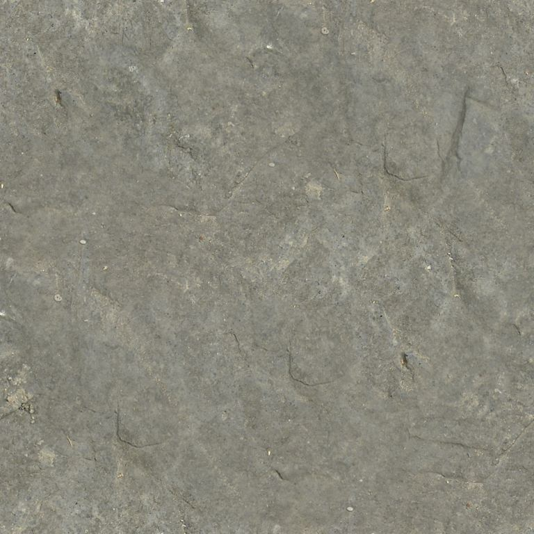
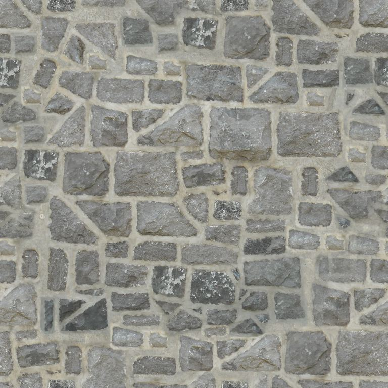
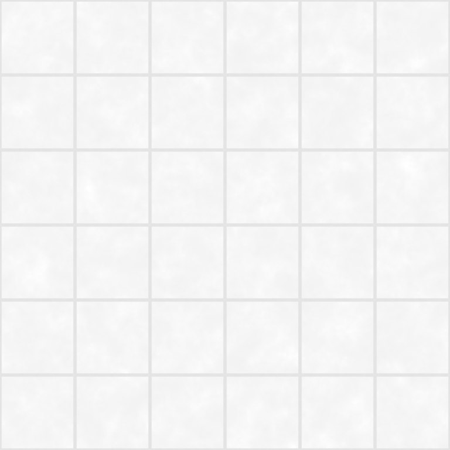
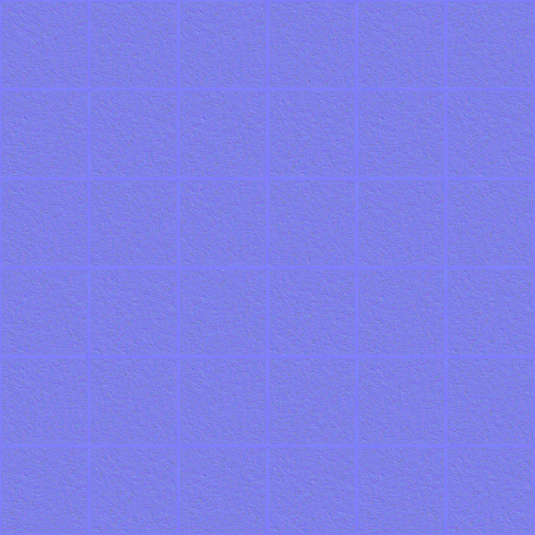
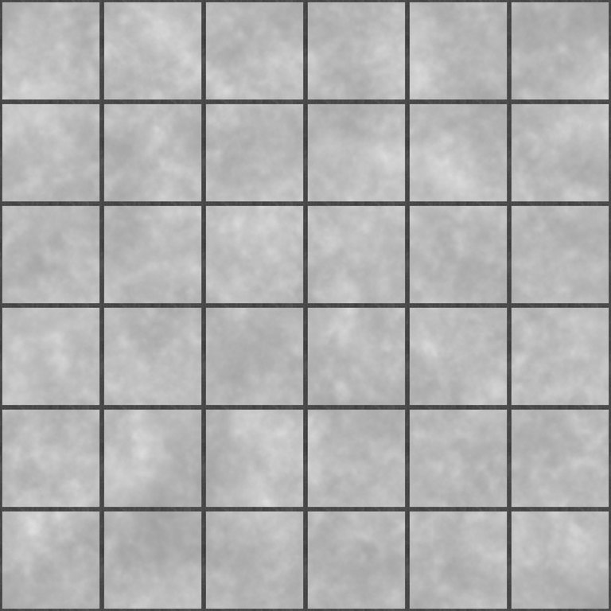
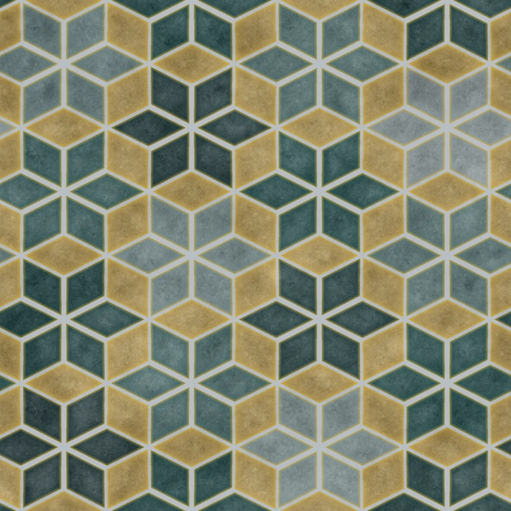
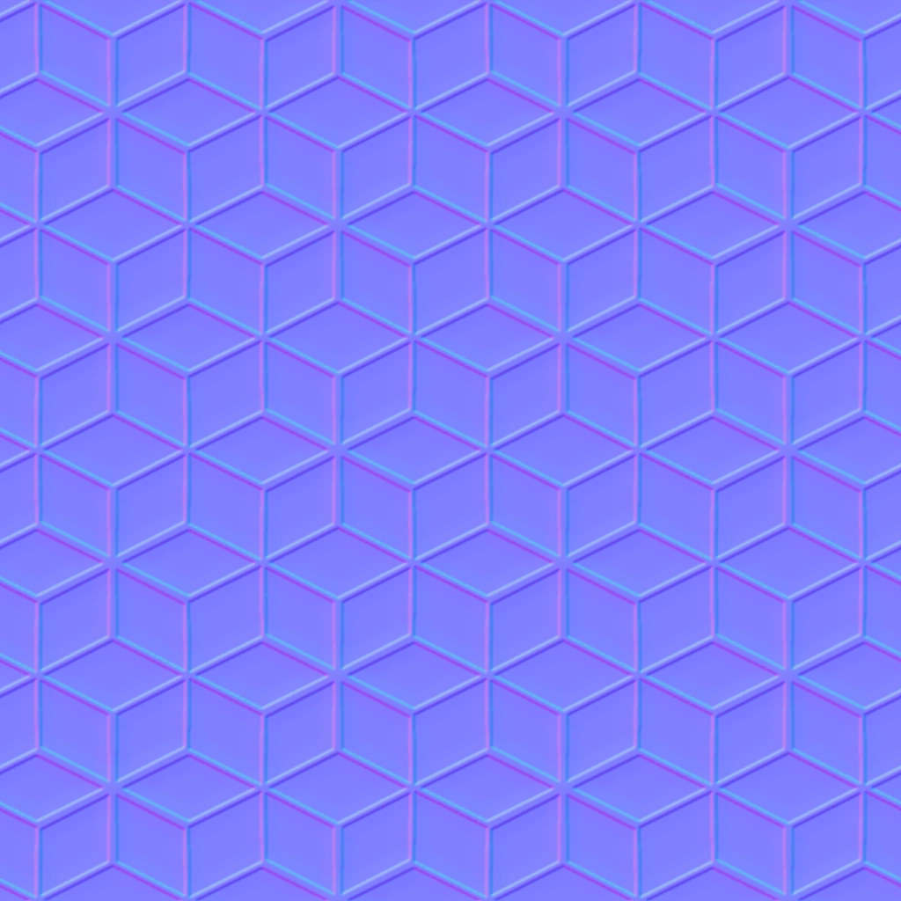
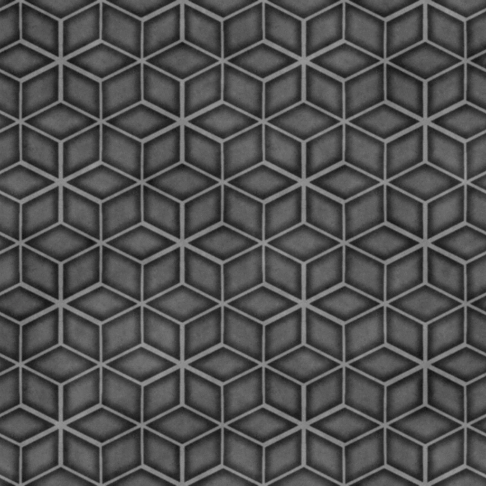

Stone scan
OpenGameArt 048.jpg
Ceiling colour map
OfficeCeiling001_Color.jpg
Ceiling normal map
OfficeCeiling001_NormalGL.jpg
Ceiling roughness map
OfficeCeiling001_Roughness.jpg
PBR floor tiles
Bajwa color.webp
PBR floor tile normal map
Bajwa normal.webp